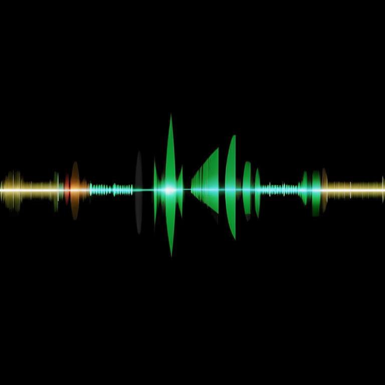

Процесс передачи звука через Bluetooth-соединение состоит из нескольких этапов:
1. Аналого-цифровое преобразование: Звуковой сигнал, который мы слышим, является аналоговым сигналом. Это означает, что он непрерывен и изменяется во времени. Однако для передачи по цифровым каналам связи, таким как Bluetooth, этот сигнал должен быть преобразован в цифровую форму. Это делается с помощью аналого-цифрового преобразователя (АЦП), который измеряет уровень аналогового сигнала в определенные моменты времени и преобразует эти измерения в цифровые данные.
2. Сжатие данных: Цифровой звуковой сигнал может занимать много места, особенно если речь идет о высококачественном аудио. Чтобы уменьшить размер файла и ускорить передачу, используется сжатие данных. Для этого применяются различные алгоритмы сжатия, такие как MP3, AAC, aptX и другие. Эти алгоритмы удаляют избыточную информацию из сигнала, сохраняя при этом достаточное качество звука для комфортного прослушивания.
3. Кодирование: После сжатия данных они должны быть закодированы для передачи по беспроводному каналу связи. Кодирование включает в себя добавление дополнительной информации, такой как синхронизация, управление потоком и другие метаданные, необходимые для корректного воспроизведения звука на приемном устройстве.
4. Передача по Bluetooth: Закодированный цифровой сигнал теперь готов к отправке по Bluetooth. Bluetooth использует радиоволны для передачи данных между устройствами на короткие расстояния. Скорость передачи зависит от версии Bluetooth и может варьироваться от нескольких десятков килобит в секунду до нескольких мегабит в секунду.
5. Декодирование и цифро-аналоговое преобразование: Приемное устройство, такое как наушники, принимает закодированный цифровой сигнал и декодирует его, восстанавливая исходные данные. Затем цифровой сигнал преобразуется обратно в аналоговую форму с помощью цифро-аналогового преобразователя (ЦАП).
6. Усиление и воспроизведение: Аналоговый сигнал усиливается до уровня, достаточного для работы динамиков наушников, и затем воспроизводится в виде звуковых волн, которые мы слышим.
Этот процесс происходит практически мгновенно, и мы воспринимаем его как непрерывный поток звука без заметных задержек или искажений.